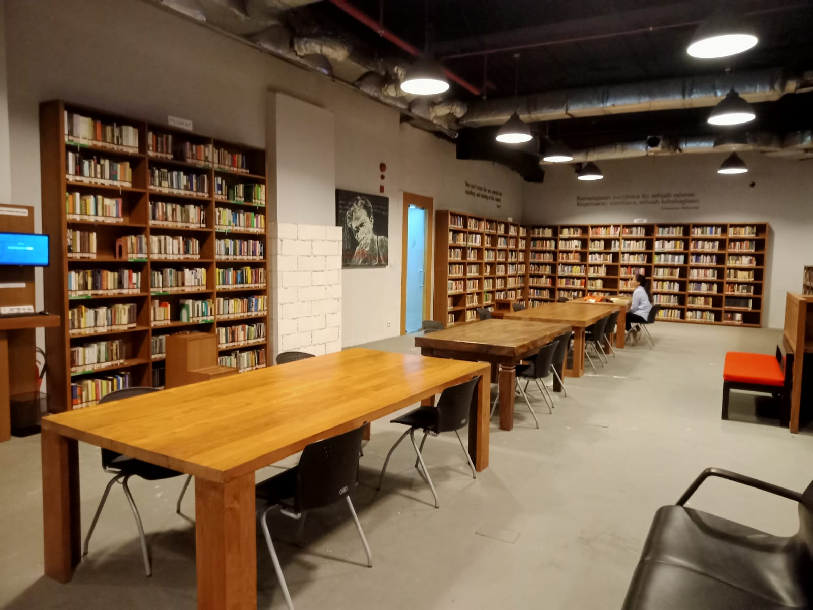

LibNews.com
INDUSTRIDI JAKARTA
Editor: Amanda Dea Agustin (11210251000009) - 5A IPI
Freedom Institute adalah perpustakan umum yang memiliki nuansa desain interior industri dan perpustakaan Freedom ini menggunakan pemilihan warna coklat serta atmosfer yang hangat. Serta saat kamu berkunjung ke perpus ini, kamu akan terasa nyaman. Banyak mahasiswa, bahkan karyawan yang berkunjung ke perpus Freedom untuk mengerjakan tugas, berdiskusi ataupun membaca di tempat. Jenis koleksi yang dimiliki perpustakaan freedom ini sangat banyak dan disusun sesuai dengan tema, seperti koleksi buku mengenai filsafat, agama, politik, ekonomi, sosiologi, sastra, dan lain-lain. Akan tetapi, bagi kamu yang ingin memanfaatkan koleksi buku yang ada di perpustakaan ini, kamu hanya bisa membacanya ditempat nih readers. Sehingga, pengunjung luar tidak diperbolehkan meminjam koleksi buku di perpustakaan freedom ini.
Berikut ini perpustakaan Freedom memiliki beberapa fasilitas, layanan, dan jenis koleksi yang dapat kamu manfaatkan:
| No | Jenis Layanan | Keterangan |
|---|---|---|
| 1. | Ruang Baca | Ruang Baca ini dapat dimanfaatkan pemustaka saat membaca koleksi buku di perpustakaan, tersedia ruang baca yang nyaman dengan desain interior berbentuk model kayu dan sofa melingkar |
| 2. | Sirkulasi | Layanan sirkulasi ini dapat dimanfaatkan pemustaka, bagi mereka yang ingin melakukan peminjaman, pengembalian, dan perpanjangan koleksi. |
| 3. | Pendaftaran Anggota | Pemustaka dapat melakukan pendaftaran anggota langsung ke perpustakaan freedom dengan membawa KTP dan alat tulis untuk mengisi formulir yang disediakan. Serta nantinya pemustaka akan mendapatkan kartu keanggotaan. |
| 4. | Referensi | Layanan referensi ini, perpustakaan freedom menyediakan jenis koleksi referensi politik, sosial, filsafat, novel, ekonomi, dan lain-lain. |
| 5. | Katalog Online (OPAC) | Layanan ini pemustaka dapat mengakses secara langsung di perpustakaan Freedom ataupun secara online dari luar perpustakaan melalui http://perpustakaanfreedom.com/ |
Selain itu juga terdapat beberapa jenis koleksi yang dimiliki perpustakaan Freedom diantaranya yaitu:
Berikut ini lokasi dan jam operasional perpustakaan Freedom:
Jl. Wisma Bakrie, Jl. H. R. Rasuna Said No.11, RT.5/RW.2 12920 Daerah Khusus Ibukota Jakarta Daerah Khusus Ibukota Jakarta.
@2023 - CopyRight by Amanda
Nama : Amanda Dea Agustin (11210251000009)
Kelas: 5A IPI - UIN Syarif Hidayatullah Jakarta
Mata Kuliah: Pengembangan Web
Dosen Pengampu: Pak Muhammad Azwar., S.Pd., M.Hum
{kind=link}